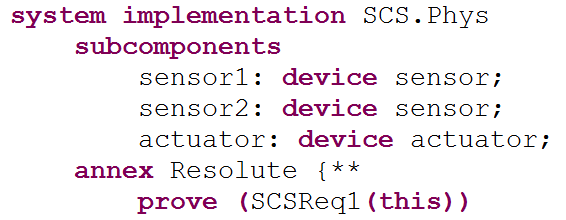
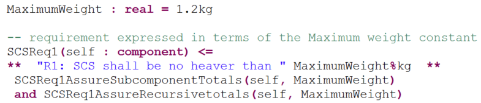
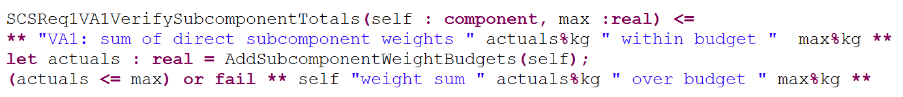
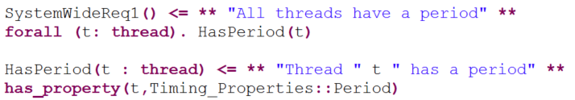

Resolute allows users to define a set of claim functions and associate them with an AADL model. You can use these claim functions to represent the requirements to be satisfied, the verification actions used to verify them, and assumptions made by a verification action in order to produce a valid result. You will express the requirements as predicates on subrequirements and verification actions. Verification actions invoke Boolean computational functions to represent predicates to be evaluated and general computational functions to compute values to be compared in predicates. The computational function notation has its roots in Lute and REAL. You can organize claim functions into a hierarchy where a claim function is satisfied only if its subclaim functions are satisfied according to the specified predicate logic.
Throughout this document, we use an example of resource budget analysis, in particular, an analysis of weight. The full example is available on the OSATE pages at GitHub.
With the Resolute tool, users define claim functions and computational functions in Resolute annex libraries, i.e., Resolute annex clauses placed directly in an AADL package. The example below shows a claim function called SCSReq1 that represents a requirement and consists of two verification actions. At least one of them must be satisfied for the requirement to be satisfied (expressed by or). The example also shows a computational function that calculates the sum of budgets of all direct subcomponents. Finally, the example shows a global constant definition that a user can reference in a Resolute library or Resolute subclause. Here, we use it to specify the maximum weight, against which the verification actions will compare the total.
Users then associate the claim functions representing requirements with component types or implementations by prove statements declared in Resolute annex subclauses. The example shows the prove statement for SCSReq1 with the component itself passed in as a parameter.

Users invoke the Resolute command on a component implementation. This results in an instantiation of the component implementation and the application of all claim functions associated with all of the components in the instance model via the prove statements.

The verification results are then displayed in a view labeled Assurance Case. For each claim function invoked by a prove statement, Resolute evaluates any claim function called by the claim function expression.
Currently, each prove statement is shown at the top level of the Assurance Case view. This is the case for different prove statements of the top-level component as well as any subcomponent that has prove statements.

Claim functions can represent requirements, verification actions, and assumptions. There is currently no syntactic distinction in their use. This section describes conventions that users should follow to distinguish the different uses.
Claim functions have a name, zero or more parameters, a description, and a predicate expression. The claim function has a return type of Boolean (true to represent success and false to represent failure). The syntax of a claim function is as follows:
Claim_Function ::= name ( ( parameter ( , parameter )* )? ) <= ** description ** claim_function_expression parameter ::= name : type description ::= "text" ( parameter_reference | "text" )*
Parameters typically represent the model elements to which the claim function applies and values used in the predicate expression to determine whether the predicate is satisfied. The parameter declaration consists of a name and a type (for more information, see the Resolute Type System section in the Resolute Language Reference).
The description can be a combination of strings and parameter references; it explains the role of the claim function and is displayed as part of the result in the Assurance Case view. The description for a claim function consists of a sequence of strings and references to claim function parameters, global constants, or local constants (defined by let statements). If the values are numerical with a unit, you can specify the unit to be used for display by indicating the desired unit after a %, e.g., WeightLimit%kg. The units are those defined by Units property types in AADL property sets and do not have to be qualified by the Units type.
The evaluation of the predicate determines the success (true return value) or failure (false return value) of the claim function. The claim function expression is assumed to be a logical expression (and, forall, or, exists, andthen) to represent a predicate. In the case of and and forall, all expression elements are executed and then the result is evaluated and returns true only if all claim functions return true. Executing all claim functions allows Resolute to inform the user of all failing claim functions rather than one at a time by not executing the remaining elements in the and or forall expression. The andthen operator allows users to specify that the right-hand claim function should only be executed if the left-hand claim function returns true.
Users define claim functions in Resolute annex libraries. Declare a Resolute annex library directly in a package through the annex Resolute {** <library content> **}; statement. You can place this statement in a package by itself, combine it with library declarations for other annexes, or combine it with classifier declarations in the same package. A package cannot contain multiple Resolute annex library declarations; each library must be placed in a separate package.
Note: Resolute assumes a global name space for the names of claim functions and computational functions. Therefore, their names must be globally unique. You can reference them in prove statements, other claim functions, or computational functions without qualification by a package name.
Invoke a claim function on a component by specifying a prove statement in a Resolute annex subclause of the component implementation. The Resolute subclause of a component implementation can contain multiple prove statements. This claim function is then executed on every instance of this component implementation when the Resolute command is invoked.
When you have a system with subsystems, you can associate claim functions with each component implementation in the system hierarchy. The verification of this claim will then be performed for each instance of the component implementations with a prove statement. Typically, you have prove statements for the top-level system that involve verifying the system across multiple layers, e.g., performing resource budget analysis across the whole system. You may also perform compositional verification by verifying a component with respect to its direct subcomponents. In this case, you place a prove statement at each layer, i.e., with each component implementation of components involved in the system. We illustrate this capability with our resource budget analysis, by analyzing budgets of direct subcomponents against the specified budget limit for each layer of the architecture.
Note: A prove statement cannot be declared for a component type. A declaration with the component type would mean that it applies to all instances of all implementations.
The parameter values can be integers, real numbers, strings, Boolean literals, model elements, references to global constants, and collections of these types. They must match the specified type for the parameter.
One special model element reference is expressed by the keyword this. It refers to the instance model object of the model element that contains the prove statement. The keyword this can only be used in the prove statement—not in verification action expressions. This constraint means that this must be passed to a claim function for it to know what model element it operates on—unless you have a global claim function (see Global Constants).
prove ( Memory_safe ( this ))
You can also identify a subcomponent of this; i.e., associate the verification action with a component down a path of the architecture hierarchy. This allows you to specify a verification action for a specific component instance. This example shows how a prove statement is applied to a subcomponent called subsystem1:
prove ( Fully_Connected ( this.subsystem1 ))
The prove statement can be associated with the component classifier of the subcomponent. In this case, it applies to all instances of that component. We recommend that you associate prove statements with a path only if the prove is intended for that particular instance of a subcomponent.
The compiler does enforce that claim functions can be invoked only in prove statements, and as operands in and, or, andthen, exists, and forall operations, and cannot be invoked in computational functions.
Users can represent a requirement with a claim function and associated it with an implementation of a system using the prove statement, as shown in this example for a system called SCS.
prove (SCSReq1(this))
The description of the claim function representing the requirement may include a requirement identifier as part of the text, as shown in the next example.
Global constants specify values in requirements that users tend to change. This allows you to localize the change to a single location. In our example, we reference a Resolute global constant MaximumWeight to indicate the desired limit in the descriptive text, as parameters to other claim functions and computational functions, and in predicate expressions.
The expression specifies the verification actions whose results are used as evidence that the requirement has been met. In the example below, we show a verification action that assures the subcomponent weight budget totals are within the limit and a verification action that recursively adds the actual weights.
The first verification action illustrates compositional verification of weights in terms of the budgets at the next lower level, while the second always takes into account all actuals. Note that the first analysis is not affected by a lower level change as long as the budget of its enclosing component is not exceeded, while the second analysis is affected by every change in weights throughout the whole system.

Because we have already specified the weight limit as a property in the AADL model, we can reference it to be supplied as a value to the verification action, as shown below.
SCSReq1AssureSubcomponentTotal(self, property(self, SEI::WeightLimit))
In addition, we can add a verification action to verify that the property and the global constant have the same value.
SCSReq1AssureWeightLimitProperty(self, property(self, SEI::WeightLimit), MaximumWeight)
A requirement may be specified vaguely such that it cannot be verified. In this case, you may need to refine the requirement into subrequirements that are verifiable. Do this by listing claim functions representing the subclaims in the claim function expression of the original requirement.
The claim function expression in a "requirement" claim function may contain and, forall, andthen, or, or exists.
The and and forall expressions indicate that all operands are evaluated; the claim is then true if all operands return true. This means that all claim functions or Boolean computational functions are executed independently of whether they return true or false. Once all have been executed, the expression returns true only if all operands are true. This allows Resolute to report to the user all failing operands rather than aborting after the first failing one and requiring the user to correct it before finding out that others fail as well.
The or and exists indicate alternative sets of verification actions. The operands are executed and the results are evaluated in order; the first returning true determines true for the claim. Effectively the user specifies that the right-hand operand is executed only if the left-hand operand fails. This allows you to specify an alternative way of verifying a claim if one verification action is not successful. You can also use it to specify a fail statement as the right-hand operand to provide a special message for a failing left-hand operand.
The andthen expression executes the left-hand operand first. If it fails, the whole expression is considered as failing (returns false). If the left returns true, the right-hand side is executed and its result value becomes the value of the andthen expression. This allows users to specify that certain claim functions, such as verification actions, should be executed only if preceding verification actions pass.
Note: Resolute allows computational expressions to be mixed with subclaim functions in a claim function expression. Unfortunately, the results of their evaluation are not shown in the Assurance Case view. This leads to the scenario where all subclaims are shown as satisfied (true), but the claim itself is shown as failed because the computational constraint expression evaluates to false. Therefore, we recommend that users not mix subclaims and computational expressions.
Claim functions also represent verification actions, whose execution produces a verification result as evidence. You can associate verification actions with a requirement by calling them in the claim function expression of the claim function representing the requirement, as shown earlier.
For a claim function that represents a verification action, the expression represents the predicate to be evaluated in order for the verification action to pass. One of the elements of the predicate typically is a constraint value to be met, and the other is a computational function call or reference to a computational result to compare. In the next example, the verification action computes the sum of the subcomponent budgets and compares them to the maximum. AddSubcomponentWeightBudgets is a computational function that returns a real value.
Note: The identifier VA1 is added into the description text by convention.
If we want to produce a special error message for a failing verification condition, we can use the or operation with a fail statement as the right-hand side. Failure of the left-hand side results in the execution of the right-hand side; i.e., this operation effectively throws a fail exception with the specified description text, which is then associated with the enclosing claim function.

Verification actions may make
assumptions that must hold for the verification action result to be accurate
preconditions that must hold in order for the verification action to be executed
A use case for a verification action assumption is that the calculation of the weight totals can be performed even though some components may not yet have a weight budget. However, it is still useful to evaluate the partial weight total result as it may already be close to or exceed the limit. This allows Resolute to inform the user without first requiring the user to complete the model with missing weight budget properties. The assumption function will determine how many components have a weight budget and report the percentage of components with a weight budget.
The following example illustrates a verification action with an assumption. We have a claim function that models the assumption to be evaluated, called SCSReq1SubcomponentsHaveWeight. It counts the number of components and those with a GrossWeight property and generates a fail message with the percentage of components with a weight property.
We then use this claim function in a new claim function that executes both the assumption claim function and the claim function representing the actual verification by adding the subcomponent weight budgets that we defined earlier (SCSReq1VA1VerifySubcomponentTotals). The and operator allows both assumption and verification action claim functions to be evaluated.


A use case for a verification action precondition is that the verification action cannot perform the analysis until all the data is present; i.e., all components involved in the computation have appropriate property values. In this case, we use the andthen operator instead of and.
Claim functions can be defined without parameter. In this case, the claim function first queries the instance model for objects and then applies a claim function to each element of the query. The query is accomplished by identifying a collection of model elements and then applying a claim function to each element of the collection using forall or exists. Model element collections can be identified by category, e.g., by threads for all threads in the instance model or by set constructors such as instances(classifier), which returns all component instances of the specified classifier. Collections and their operations are discussed in detail in the Resolute Language Reference.
The example shows a global constraint that all threads must have a period property value.

You can include global claim functions as prove statements on any model element, since they query the whole model independently of a specific model element. However, you should place them in the top-level component implementation to which the Resolute command is applied; otherwise, they may be invoked multiple times.
This material is based upon work funded and supported by the Department of Defense under Contract No. FA8721-05-C-0003 with Carnegie Mellon University for the operation of the Software Engineering Institute, a federally funded research and development center.
Any opinions, findings and conclusions or recommendations expressed in this material are those of the author(s) and do not necessarily reflect the views of the United States Department of Defense.
NO WARRANTY. THIS CARNEGIE MELLON UNIVERSITY AND SOFTWARE ENGINEERING INSTITUTE MATERIAL IS FURNISHED ON AN "AS-IS" BASIS. CARNEGIE MELLON UNIVERSITY MAKES NO WARRANTIES OF ANY KIND, EITHER EXPRESSED OR IMPLIED, AS TO ANY MATTER INCLUDING, BUT NOT LIMITED TO, WARRANTY OF FITNESS FOR PURPOSE OR MERCHANTABILITY, EXCLUSIVITY, OR RESULTS OBTAINED FROM USE OF THE MATERIAL. CARNEGIE MELLON UNIVERSITY DOES NOT MAKE ANY WARRANTY OF ANY KIND WITH RESPECT TO FREEDOM FROM PATENT, TRADEMARK, OR COPYRIGHT INFRINGEMENT.
This material has been approved for public release and unlimited distribution.
DM-0003006